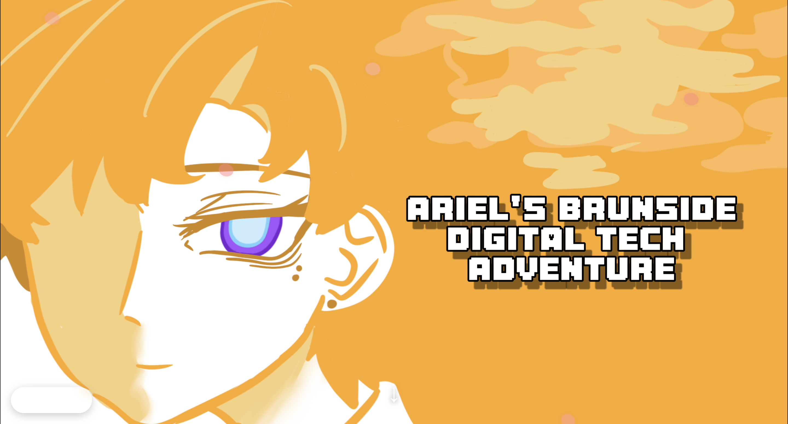
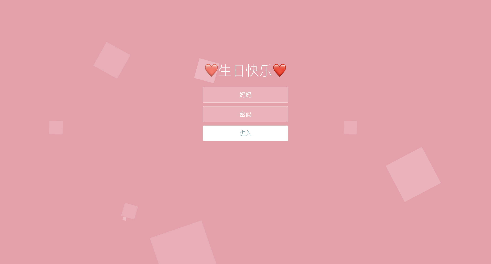

My Website Design Projects

08/03/2026
My first website with Visual Studio Code

01/03/2026
A masterpiece I made for my mum, but I already deleted all the texts and photos on it, but I you can have a look, click the photo to see more information.
?/?/?
More works might come soon.